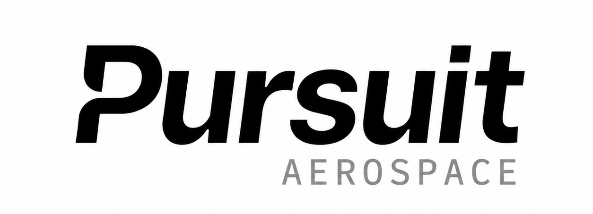
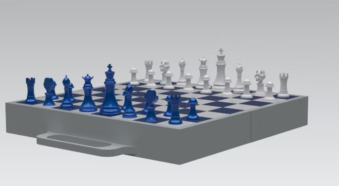

Engineering Design Portfolio
Portfolio featuring CAD modeling and analysis, product development, additive manufacturing, and industrial design projects.
Selected Projects

Hands-Free Resistance Welder
Designed and advanced a hands-free resistance welding system for Pursuit Aerospace to automate insulation blanket welding, improving ergonomics, reducing defects, and increasing production efficiency. The project earned 1st place for its innovative, production-focused manufacturing solution.
View Project
UConn Themed Chess Board Assembly
Designed and modeled a detailed chess set in Siemens NX as part of a final engineering design project at the University of Connecticut.
View ProjectProject Categories

Engineering Background
I am a mechanical engineer graduate focused on CAD development, aerospace systems, manufacturing, and product design. My work combines analytical engineering with modern industrial design through NX, SolidWorks, additive manufacturing, and technical modeling.